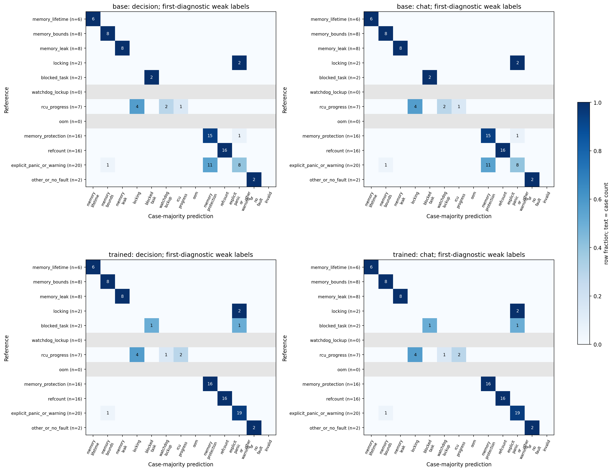
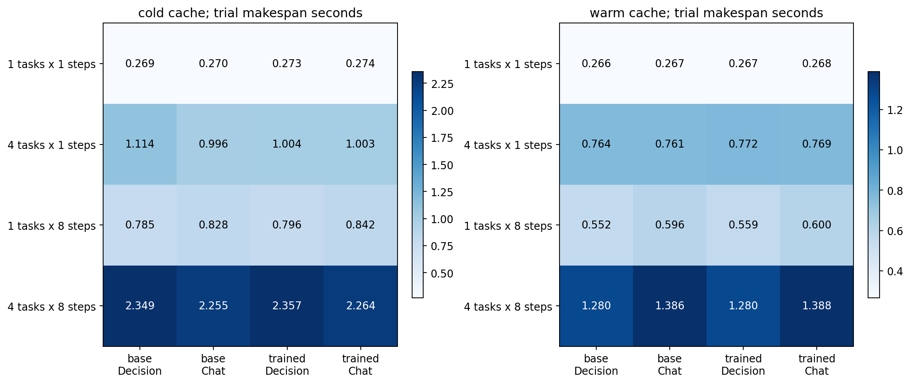

# Qwen3.5-9B 决策模型：训练与项目并发复测
## 实测摘要
- decision 第一诊断家族：基座 66/87（75.9%），训练后 78/87（89.7%）。这是弱监督标签一致性，不是独立专家根因准确率。
- chat 第一诊断家族：基座 66/87（75.9%），训练后 78/87（89.7%）。这是弱监督标签一致性，不是独立专家根因准确率。
- base 的 4任务×8步、预热条件：Decision 整批 1.2800s，Chat 单token整批 1.3861s，Decision 耗时变化为减少 7.65%；活跃 KV 峰值均值分别 458.22/458.12MiB。需结合完整8条件与置信区间解读。
- trained 的 4任务×8步、预热条件：Decision 整批 1.2803s，Chat 单token整批 1.3876s，Decision 耗时变化为减少 7.74%；活跃 KV 峰值均值分别 458.22/458.12MiB。需结合完整8条件与置信区间解读。
## 模型、方法与来源
用户确认采用官方 Qwen3.5-9B 预训练模型，固定 revision `c202236235762e1c871ad0ccb60c8ee5ba337b9a`。通过独立官方元数据校验15个文件；镜像只承担传输。参考 Laya 类型化概率决策与 proper-score RLCD，在 Qwen 因果混合注意力骨干训练 LoRA；未复用 Laya 的双向 BERT 决策头，也不是 TypeSafe Jev 专有架构复现。没有从随机参数预训练9B。
48处文本投影使用 rank8、alpha16 LoRA，共 5,308,416 个参数，BF16骨干/FP32适配器与AdamW。3epoch共396微步（每4微步更新，99次优化器更新），学习率1e-4。第1epoch为CE，后2epoch为CE＋RLCD。按开发NLL选 epoch1（从0计），选定温度0.5。从训练循环开始到评估、导出与哈希共343.7s；不含此前加载、首次基座评估与编译。峰值torch分配18.74GiB；不等同于NVML resident峰值。
RLCD 在分类logits上采样零均值高斯扰动，以 log score＋0.75 spherical score 为奖励，按组标准化优势构造高斯策略梯度，并加入CE。只训练choice任务，不声称训练了noul、score、工具选择或根因提交预测能力。Laya还支持有序score的RPS，此实验无该监督。合并后恢复原模型架构，基座与训练后均用同一SGLang，消除跨引擎对比中的主要混杂。
理论边界：未截断的log/spherical评分规则为概率监督提供依据；本实现延续log奖励下限−9.21、有限4次扰动采样及优势标准化，不能把这些数值近似后的训练目标宣称为全域严格恰当性或无偏策略梯度的证明。监督奖励来自既有标签，不涉及人类偏好或在线真实故障反馈；CE预热、RLCD和开发选点共同作用，本轮没有等训练步数的CE-only消融、多seed或新盲测，不能把最终差异单独归因RLCD。
```mermaid
flowchart LR
L[真实日志 / 源码 / 编译产物] --> E[只读工具提取证据]
E --> D[Qwen9B 决策前向]
D --> P[候选概率 / 第一诊断定界]
P --> C[Chat 提出可验证假设]
C --> T[源码搜索 / 阅读 / 符号化]
T --> C
C --> R[带证据的定位报告与缺失信息]
R --> V[隔离评估器 / 机制聚类统计]
F[机制分组 / 冻结划分] --> A[仅train训练 / dev选点校准]
A --> D
F --> G[仅test金标 / Agent不可见]
G --> V
```
这是系统工作逻辑，不表示本次监督覆盖了所有节点。本轮训练的是决策节点的第一诊断family任务，报告节点另做小样本完整流程检查。测试评分不回流训练。
[Laya固定版本](https://github.com/NandhaKishorM/laya/tree/4ac226d5ee88ed6df8db288a05c766d7a34ee682)；[Qwen模型卡](https://huggingface.co/Qwen/Qwen3.5-9B)；[Foundry模型生命周期与部署概览](https://learn.microsoft.com/en-us/azure/foundry-classic/concepts/foundry-models-overview)。Foundry页面不是Jev算法来源，本轮没有使用Azure资源。
## 数据、划分和标签泄露审计
现有两种内核构建共124条纳入日志，划分为{'test': 87, 'train': 33, 'dev': 4}。跨内核按规范化注入机制分组，历史test组取并集，再用固定哈希划分其余组；重复读写、refcount、usercopy等变体归组。模型只能看到经过注入标识遮盖的诊断窗口、问题与选项，不包含路径、split、gold或机制字段。精确输入及机制组跨划分交集为空；原始文件逐个验哈希，源哈希与窗口哈希在冻结清单。
标签按第一诊断标记及其邻近内容确定，是程序产生的弱监督。没有独立专家复核，没有新盲测保证；自然近重复、预训练污染和已有开发者见过测试集的影响仍在。窗口按诊断标记提取，只支持定界任务；不能据此评价自主从全部日志寻找首现场的能力。可见的“KASAN use-after-free”等是推理证据，同时也意味着该任务相当程度是显式诊断解析，不能当作隐含根因推理能力。
开发集仅4条、3类，部分test类别从未进入train，温度在边界取0.5，校准容易过拟合。主准确率按每案例三种选项置换多数投票；置换和跨内核同机制不作独立样本。两模型差异用机制聚类bootstrap，探索性区间不构成准确率等效检验。
| 划分 | 类别 | 数量 |
|---|---|---|
| train | memory_bounds | 6 |
| train | memory_protection | 7 |
| train | explicit_panic_or_warning | 11 |
| train | memory_lifetime | 6 |
| train | rcu_progress | 2 |
| train | locking | 1 |
| dev | memory_protection | 1 |
| dev | rcu_progress | 2 |
| dev | explicit_panic_or_warning | 1 |
| test | other_or_no_fault | 2 |
| test | memory_lifetime | 6 |
| test | memory_leak | 8 |
| test | memory_protection | 16 |
| test | explicit_panic_or_warning | 20 |
| test | blocked_task | 2 |
| test | memory_bounds | 8 |
| test | refcount | 16 |
| test | rcu_progress | 7 |
| test | locking | 2 |
## 概率与标签一致性
| 模型 | 接口 | 内核 | 正确/案例 | 准确率 |
|---|---|---|---|---|
| base | decision | all | 66/87 | 75.86% |
| base | decision | stability | 34/42 | 80.95% |
| base | decision | openharmony | 32/45 | 71.11% |
| base | chat | all | 66/87 | 75.86% |
| base | chat | stability | 34/42 | 80.95% |
| base | chat | openharmony | 32/45 | 71.11% |
| trained | decision | all | 78/87 | 89.66% |
| trained | decision | stability | 39/42 | 92.86% |
| trained | decision | openharmony | 39/45 | 86.67% |
| trained | chat | all | 78/87 | 89.66% |
| trained | chat | stability | 39/42 | 92.86% |
| trained | chat | openharmony | 39/45 | 86.67% |

| 第一诊断类别 | 测试支持数 | 基座正确 | 训练后正确 |
|---|---|---|---|
| memory_lifetime | 6 | 6 | 6 |
| memory_bounds | 8 | 8 | 8 |
| memory_leak | 8 | 8 | 8 |
| locking | 2 | 0 | 0 |
| blocked_task | 2 | 2 | 1 |
| watchdog_lockup | 0 | 0 | 0 |
| rcu_progress | 7 | 1 | 2 |
| oom | 0 | 0 | 0 |
| memory_protection | 16 | 15 | 16 |
| refcount | 16 | 16 | 16 |
| explicit_panic_or_warning | 20 | 8 | 19 |
| other_or_no_fault | 2 | 2 | 2 |
主要提升集中在“explicit_panic_or_warning”与“memory_protection”的标签边界，属于本任务监督口径的适配；locking仍有错误，watchdog与OOM没有测试支持，不能据此得出所有故障家族均改善的结论。
| 接口 | 训练后−基座准确率 | 机制簇 | 机制聚类95%区间 |
|---|---|---|---|
| decision | +13.79% | 20 | [+0.00%, +34.62%] |
| chat | +13.79% | 20 | [-0.89%, +34.48%] |
| 模型 | 温度 | 案例NLL | Brier | ECE(10箱) |
|---|---|---|---|---|
| base | 1.0 | 0.8301 | 0.2832 | 0.1246 |
| trained | 1.0 | 1.7245 | 0.1761 | 0.0805 |
| trained | 0.5 | 1.9574 | 0.1762 | 0.0805 |
这些概率指标先对每案例的三种选项置换平均，再评分；不与原始逐请求校准指标混用。可靠性分箱原始数见 `calibration.json`。只在开发集确定温度，测试集只报告结果；若温度校准使测试NLL恶化，不能用准确率不变掩盖这一点。

候选概率是给定选项集合后的条件分布，不是保证无遗漏的全空间真值概率。12选项上的开发温度也不能自动推广至其他选项数或stage/reporter等新问题。
本轮正是这一反例：准确率提高同时，NLL由0.830升至1.724；部分错误高度自信。Brier/ECE改善不等于所有概率质量指标改善。温度0.5来自4条开发样本，测试NLL进一步恶化，当前不建议将此校准温度作为可信置信度上线。
BF16合并前后4条开发输入top1全部相同，但最大logit差达3.308，并非逐位等价。最终主结果均测量实际合并后SGLang服务；未合并模型的离线分数只作为旁证，不冒充部署分数。
## 并发实验与完整计时口径
每模型112trial：80主条件（2接口×1/4任务×1/8顺序步骤×冷/热×5重复），20批量8题，12观测敏感性。980正式HTTP、1330内部问题；预检、warmup、prime、准确率与Agent调用独立计数。模型固定执行基座→训练后，同模型内部trial随机化。4个实际日志诊断窗口相同，每任务题干不变、选项轮换；部分选项集合不含正确类别，因此性能实验不报准确率。
SGLang0.5.21、BF16、8192上下文、mem-fraction-static0.55、32个FP32 linear状态槽、实际容量4，相同A100 80GB分时独占。Decision完整概率响应耗时与Chat首个非空delta.content分别记录，Chat只生成1token。两接口完整prompt token ID逐项相等。没有把响应头或role当TTFT；Decision没有文本TTFT。批量8题是8个内部prompt评分，不是Laya式单次共享状态编码。

| 模型 | 缓存 | 任务×步骤 | Decision整批秒 | Chat整批秒 | Decision完整概率均值秒 | Chat首内容均值秒 |
|---|---|---|---|---|---|---|
| base | cold | 1×1 | 0.2689 | 0.2699 | 0.2684 | 0.2692 |
| base | cold | 4×1 | 1.1143 | 0.9962 | 0.8586 | 0.7406 |
| base | cold | 1×8 | 0.7852 | 0.8282 | 0.0978 | 0.1029 |
| base | cold | 4×8 | 2.3488 | 2.2551 | 0.2920 | 0.2774 |
| base | warm | 1×1 | 0.2662 | 0.2666 | 0.2656 | 0.2659 |
| base | warm | 4×1 | 0.7640 | 0.7613 | 0.6479 | 0.6453 |
| base | warm | 1×8 | 0.5518 | 0.5957 | 0.0686 | 0.0738 |
| base | warm | 4×8 | 1.2800 | 1.3861 | 0.1594 | 0.1713 |
| trained | cold | 1×1 | 0.2731 | 0.2739 | 0.2726 | 0.2732 |
| trained | cold | 4×1 | 1.0044 | 1.0034 | 0.7464 | 0.7536 |
| trained | cold | 1×8 | 0.7961 | 0.8416 | 0.0991 | 0.1044 |
| trained | cold | 4×8 | 2.3573 | 2.2639 | 0.2929 | 0.2784 |
| trained | warm | 1×1 | 0.2673 | 0.2681 | 0.2667 | 0.2674 |
| trained | warm | 4×1 | 0.7719 | 0.7695 | 0.6541 | 0.6517 |
| trained | warm | 1×8 | 0.5589 | 0.5998 | 0.0694 | 0.0743 |
| trained | warm | 4×8 | 1.2803 | 1.3876 | 0.1595 | 0.1715 |
每侧详细统计及6组图见 `analysis/base`、`analysis/trained`；逐请求排队、主机prefill区间、缓存命中与响应在其 `tables/calls.csv` 和 `server-requests.csv`。调度快照保留 run_batch/process_batch_result 前后，包含队列长度、请求ID、活跃/可回收attention KV、linear状态池与torch allocator。NVML约100ms保留显存、功耗、利用率、温度和时钟；边界间无法捕捉的短峰值不外推。
9B全注意力每token KV=2×8层×4KV头×256维×2字节=32KiB。linear状态另计。resident显存、活跃KV与预分配池容量不是同一指标；不得因预分配池同样大而宣称没有活动KV差异，也不能把9B比旧27B的小体积归因于Decision接口。`trial-power-energy.csv`只在采样覆盖区间积分GPU板级能量，不将并发任务重复分摊，不视为单请求能耗或纯模型动态能耗。

## 现有Agent闭环检查
| 模型 | 流程 | 案例 | 状态 | 源码位置命中 | 模型HTTP | 工具次数 | 定界秒 | 总定位秒 |
|---|---|---|---|---|---|---|---|---|
| base | chat-only | corrupt_uaf_kmalloc | failed | False | 6 | 3 | None | 1.203 |
| base | chat-only | lock_mutex_abba | failed | False | 6 | 3 | None | 7.579 |
| base | chat-only | lkdtm_HUNG_TASK | failed | False | 6 | 6 | None | 1.133 |
| base | decision-boundary-chat-root | corrupt_uaf_kmalloc | failed | False | 6 | 12 | 0.8364 | 2.274 |
| base | decision-boundary-chat-root | lock_mutex_abba | failed | False | 6 | 11 | 0.6595 | 2.139 |
| base | decision-boundary-chat-root | lkdtm_HUNG_TASK | failed | False | 6 | 13 | 0.5447 | 2.615 |
| trained | chat-only | corrupt_uaf_kmalloc | failed | False | 6 | 3 | None | 0.436 |
| trained | chat-only | lock_mutex_abba | failed | False | 6 | 3 | None | 7.626 |
| trained | chat-only | lkdtm_HUNG_TASK | failed | False | 6 | 6 | None | 1.173 |
| trained | decision-boundary-chat-root | corrupt_uaf_kmalloc | failed | False | 6 | 12 | 0.8373 | 2.379 |
| trained | decision-boundary-chat-root | lock_mutex_abba | failed | False | 6 | 11 | 0.6842 | 2.217 |
| trained | decision-boundary-chat-root | lkdtm_HUNG_TASK | failed | False | 6 | 13 | 0.5425 | 2.761 |
三个案例是已见过历史测试，不构成新的独立根因实验。源码位置交叠命中不是根因机制正确，更不能证明找到了引入问题的提交；数据集没有独立提交金标。沿用实际部署Agent的证据读取、工具、匿名工作目录和bubblewrap；只在冻结副本显式关闭thinking。完整工具/API轨迹私有保留，公开仅导出计数和评分。失败计入分母，不能只报告成功请求耗时。
### 独立32k上下文及客户端兼容修复复核
8k失败不能解释为模型不会定位：原请求实际17,672/20,734token，HTTP400明确报告超过8192。首次32k复核进一步暴露客户端将`tool_calls:null`当列表遍历的错误；该轮中止、守护恢复、部分结果与原因独立保留。随后在全新目录重跑两模型，显式关闭thinking、将空tool_calls归一为[]，上下文32768，其他配置相同；没有改动8k性能/分类结果。
| 模型 | 32k流程 | 案例 | 状态 | 源码位置命中 | 模型HTTP | 工具次数 | 定界秒 | 总定位秒 |
|---|---|---|---|---|---|---|---|---|
| base | chat-only | corrupt_uaf_kmalloc | completed | True | 1 | 3 | 7.6349 | 7.635 |
| base | chat-only | lock_mutex_abba | completed | True | 1 | 3 | 7.1984 | 7.198 |
| base | chat-only | lkdtm_HUNG_TASK | completed | False | 1 | 6 | 8.7337 | 8.734 |
| base | decision-boundary-chat-root | corrupt_uaf_kmalloc | completed | True | 4 | 12 | 0.8173 | 19.675 |
| base | decision-boundary-chat-root | lock_mutex_abba | completed | True | 4 | 11 | 0.6587 | 23.691 |
| base | decision-boundary-chat-root | lkdtm_HUNG_TASK | completed | False | 2 | 13 | 0.5473 | 10.098 |
| trained | chat-only | corrupt_uaf_kmalloc | completed | True | 1 | 3 | 6.7709 | 6.771 |
| trained | chat-only | lock_mutex_abba | completed | True | 1 | 3 | 6.8499 | 6.85 |
| trained | chat-only | lkdtm_HUNG_TASK | completed | False | 1 | 6 | 9.6076 | 9.608 |
| trained | decision-boundary-chat-root | corrupt_uaf_kmalloc | completed | True | 2 | 12 | 0.8101 | 9.341 |
| trained | decision-boundary-chat-root | lock_mutex_abba | completed | True | 2 | 11 | 0.6635 | 9.438 |
| trained | decision-boundary-chat-root | lkdtm_HUNG_TASK | completed | False | 2 | 13 | 0.5521 | 10.468 |
完整公开明细见 `agent32k/`，每侧6个匿名bubblewrap工作目录均验证看不到评估canary、业务状态、host root及host proc。上下文修复和客户端修复不是权重训练收益，两模型均接受相同修复。3例结果只作闭环功能与效率探索；混合流程若增加调用与总时间，不能以局部定界接口更快抵销这个事实。
## 结论与适用边界
- decision：本轮训练后第一诊断弱标签一致性变化 +13.79%。该观测只能支持此冻结数据/口径；若下降，应优先补充独立专家标注、扩大开发集并覆盖缺失类别，不能以训练loss接近0作为上线依据。
- chat：本轮训练后第一诊断弱标签一致性变化 +13.79%。该观测只能支持此冻结数据/口径；若下降，应优先补充独立专家标注、扩大开发集并覆盖缺失类别，不能以训练loss接近0作为上线依据。
- LoRA训练和权重合并保持了原Qwen架构，并不会自动改变SGLang的KV管理或将8题合为一次前向。接口省去生成步骤是否有利，必须看各条件延迟及实际缓存命中；不能从“无输出token”推导显著省显存。
- 只有本轮记录才是9B实测；旧27B、PPLX和不同引擎结果保留为历史资料，不能拼成同一消融。当前设计仍有固定模型顺序、小开发集、弱标签、有限输入和观测开销等限制；未做多训练seed、未获得新盲测、未证明跨项目泛化或根因提交提升。
## 部署、恢复及证据
原27B生产模型已由独立恢复控制器恢复，实际Decision与Chat合成请求验收见 `restoration.json`；实验30003退出。恢复模型服务不代表网站全部功能通过验收。PPLX当前未运行，其11个非必要、逐个校验的可下载分片已依用户授权清理；恢复固定版本和文件清单见 `weight-reclamation.json` 及 `pplx-recovery-metadata.json`，配置、tokenizer和代码未删。
新权重位于 `/root/gpufree-data/systemone/models/AI4Loc-Jev-Qwen3.5-9B`，哈希见 `trained-checkpoint-manifest.json`。训练适配器、原始请求/SSE/源日志/完整调度记录与失败重试留在服务器，并打包到本地Git忽略目录；公开仓库只保存脚本、允许字段数据、表格、图和说明，不发布密码、业务状态、原始日志或大模型权重。
完整执行流程、命令参数与参考见 [README](README.md)。公开数据按完整prompt token SHA＋服务端接收时间唯一关联HTTP；离线核验入口 `verify-public.py`，重算入口 `analyze.py` / `build-report.py`。